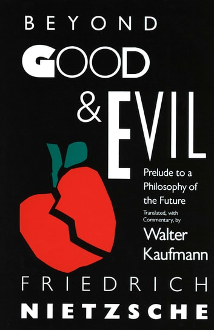

Beyond good and evil
More Information
See this linkPlot:
In a not-so-distant future, humanity has reached unparalleled heights in technological advancement. However, this progress has come at a cost as moral values have eroded, and a totalitarian regime now governs the world.
Alex Turner, a brilliant scientist, once contributed to the regime's rise, but guilt gnaws at him. When he discovers a rebel group called "The Enlightened," led by the enigmatic Zephyr, Alex faces a life-altering decision. He must choose between staying loyal to the oppressive regime that provides comfort or joining the rebels in their quest for justice and redemption.
Meanwhile, Maya Patel, an idealistic journalist, investigates the regime's dark secrets, unaware that her path will intertwine with Alex's. As they confront their beliefs and allegiances, they find themselves on opposite sides during a pivotal uprising.
In a world where good and evil blur, Alex's choice will determine not only his fate but the destiny of humanity's soul.